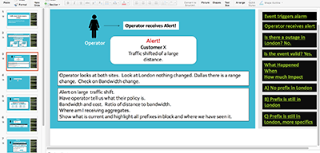
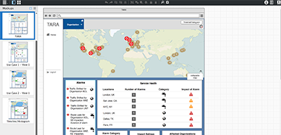
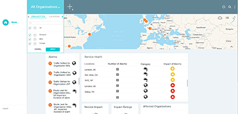
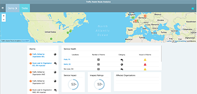
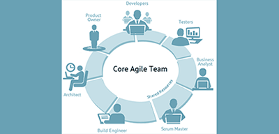

User Experience / Project Management
I have over 10 years of experience as a UX/UI Designer and a little over 6 years of developing responsive desktop and mobile applications for enterprise level customers.
For the past 6 years I have been collaborating with stakeholders by gathering requirements for product design and production. Once I collect requirements and do the required usability research, I construct a user flow and user story to present to product and project managers.
I am extremely passionate about web development!
UX Process
Step 1: Define user centered design flow: Persona > Research > Motivation > Result Utilize whiteboards or drawings with stakeholders.

Step 2: Collaborate and create storyboards for user persona and user flow using slides/decks with stakeholders and Agile team.
Step 3: Draw and design first draft mock ups and usability features with stakeholders during meetings using Balsamiq.
Step 4: Create mock ups with Photoshop or Sketch. Review with stakeholders and Agile team. Get final approval.
Step 5: Implement wireframes with HTML/CSS/JS and JS libraries. Ongoing usability testing and review with Agile team.
Step 6: Commit wireframes to Git repo and work with other deveopers for MVC build. Continue collaboration and testing with Agile team and scrum meetings.
